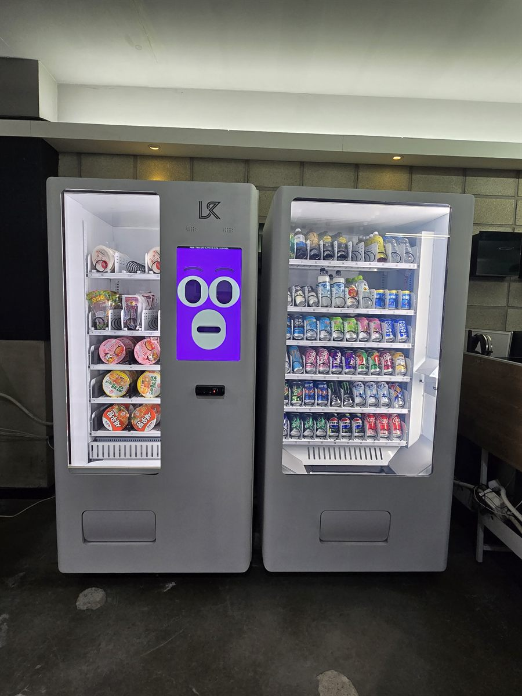

PC방은 이미 먹을 것을 팔고 있는 매장입니다. 그래서 자판기를 넣을 때 다른 업종과 질문이 다릅니다. 매출을 새로 만드는 문제가 아니라, 지금 카운터가 하고 있는 일 중 무엇을 기계로 넘길 것인가의 문제입니다. 야간에 혼자 지키는 시간대에 음료 한 캔 때문에 카운터를 비우는 일, 자리마다 걸려 오는 주문 호출, 잔돈 계산에 묶이는 몇 분이 실제로 줄어드는지가 기준이 됩니다.
자리를 정할 때 가장 오래 본 것은 앉은 사람의 눈높이에서 보이느냐였습니다. PC방은 모니터를 향해 앉기 때문에 시야가 정면으로 고정되고, 기둥이나 칸막이 뒤에 놓으면 기계가 있는지도 모릅니다. 이번 현장에서는 좌석 열이 끝나고 통로가 트이는 안쪽 벽면을 잡았습니다. 고개만 돌리면 화면 불빛이 보이고, 자리에서 걸어오는 거리도 길지 않은 자리입니다. 그다음은 전원이었습니다. PC방은 컴퓨터가 이미 전기를 많이 쓰는 매장이라 좌석 회로에 자판기를 물리면 안 됩니다. 냉장 압축기가 돌 때 순간 부하가 올라가 같은 라인에 걸린 자리가 함께 흔들릴 수 있어서, 좌석과 분리된 별도 회로에 물렸습니다. 마지막은 바닥 수평입니다. 배선 때문에 바닥을 띄워 마감한 PC방이 많아 완전히 평평하지 않은 경우가 있어, 앞다리 높이를 맞춰 문이 저절로 열리지 않게 잡았습니다.
하남 PC방에 맞는 구성
기계는 두 대로 나눴습니다. 한 대에 음료와 간식을 섞어 넣는 방법도 있지만, PC방은 사는 것이 두 갈래로 확실하게 갈립니다. 앉자마자 사는 음료와, 두세 시간 지나서 사는 먹을거리입니다. 그래서 왼쪽 기계는 컵라면과 과자·젤리를 넣고, 오른쪽은 생수·탄산·이온음료·에너지드링크로 냉장 칸을 채웠습니다. 나눠 놓으면 손님이 고르는 시간이 짧아지고, 채우는 사람 입장에서도 어느 쪽이 먼저 비는지가 한눈에 보입니다.
품목은 밤 시간대에 맞춰 짰습니다. PC방은 자정을 넘기면서 회전이 올라가는 매장이라, 에너지드링크와 탄산 칸을 다른 업종보다 넉넉하게 잡았습니다. 컵라면은 뜨거운 물을 받을 수 있는 자리가 가까운지를 먼저 확인해야 합니다. 온수기가 멀면 컵을 들고 매장을 가로질러야 해서 국물이 쏟아지고, 그 자리가 매일 닦아야 하는 자리가 됩니다. 이 현장은 온수기와 같은 벽 라인에 놓아 몇 걸음 안에 끝나도록 했습니다. 결제는 카드와 삼성페이·카카오페이·네이버페이를 받게 하고 현금함은 넣지 않았습니다. 야간에 사람이 적은 매장에서 현금함은 관리 대상이자 위험 요소입니다. 재고와 시간대별 판매는 휴대폰 앱으로 보므로, 사장님이 낮에 출근해 전날 밤 어떤 칸이 비었는지만 보고 채우시면 됩니다.
PC방 자판기, 좋은 점과 어려운 점
좋은 점은 일손이 실제로 줄어든다는 것입니다. 음료 한 캔을 위해 카운터를 비우지 않아도 되고, 야간에 혼자 있는 시간에 특히 차이가 큽니다. 24시간 매장이라 회전이 끊기지 않는 것도 장점입니다. 매점 형태로 운영하면 사람이 없을 때는 팔 수 없지만, 자판기는 새벽에도 그대로 돕니다. 실내에 있어 날씨를 타지 않고, 문을 잠그는 매장이라 파손이나 도난 걱정이 적습니다. 메뉴 정리도 쉬워집니다. 조리가 필요한 것만 카운터에 남기고 단순 판매는 기계로 넘기면 주방이 한결 가벼워집니다.
어려운 점도 그대로 적겠습니다. 첫째는 기존 매점 매출과 겹친다는 점입니다. 카운터에서 팔던 음료가 그대로 자판기로 옮겨 가는 것이라, 새 매출이라기보다 일손을 줄이는 쪽으로 보셔야 맞습니다. 둘째는 조명입니다. PC방은 일부러 어둡게 운영하는 매장이 많아 자판기 안 상품이 잘 안 보일 수 있습니다. 내부 조명이 들어오는 기종이 유리하고, 그래도 어두우면 위쪽에 작은 조명을 따로 다는 편이 낫습니다. 셋째는 쓰레기입니다. 컵라면을 넣으면 국물 처리 문제가 반드시 따라오므로, 자판기 옆에 국물 버리는 통과 분리수거함을 같이 두지 않으면 청소 부담이 눈에 띄게 늘어납니다. 넷째는 소음입니다. 냉장 압축기 소리가 조용한 매장에서는 들립니다. 좌석 바로 뒤보다 통로 쪽 벽면이 나은 이유가 여기에 있습니다.
하남 무인매장, 이런 자리가 잘 됩니다
하남은 짧은 기간에 사람이 크게 늘어난 도시입니다. 서울 강동구와 붙어 있고 지하철 5호선이 미사역·하남풍산역·하남시청역·하남검단산역까지 들어오면서, 예전의 외곽 이미지와는 자리 성격이 완전히 달라졌습니다. 미사강변도시는 하남에서 가장 두꺼운 생활권입니다. 새로 지은 아파트와 상가가 한꺼번에 들어선 구역이라 PC방·스터디카페·헬스장·학원이 상가 건물 층마다 들어가 있고, 새 건물이라 전원과 반입 경로가 깨끗해 설치 작업이 빠릅니다. 아파트 단지의 커뮤니티실과 지하 주차장 로비 문의도 이 구역에서 가장 많습니다.
신장동은 하남의 원래 중심입니다. 하남시청과 하남신장전통시장이 있고 오래된 상가가 밀집해 있어, 낮과 저녁의 사람 성격이 다릅니다. 같은 구역에 스타필드 하남이 있어 주말에는 시 바깥에서 들어오는 차량이 크게 늘고, 그 주변 상가는 주말 회전이 평일보다 높습니다. 덕풍동은 주거와 상권이 촘촘하게 섞인 구역이라 원룸·오피스텔과 학원가가 함께 있고, 실내 대기 공간이 있는 건물이면 대부분 자리가 나옵니다. 감일동과 위례동은 택지지구라 미사와 성격이 비슷합니다. 새 오피스텔과 근린상가가 많고 서울 송파구 생활권과 겹쳐 아침저녁 동선이 분명합니다. 창우동 일대는 검단산 들머리와 가까워 주말에 등산객이 모이고, 팔당댐과 미사리 한강변 쪽은 계절에 따라 사람이 크게 몰리는 구역이라 실내 대기 공간을 낀 자리라면 음료 회전이 확실히 올라갑니다. 초이동·춘궁동 방향의 공장·물류 시설은 야간 근무가 있는 사업장이 있어 휴게실 설치 문의가 꾸준합니다.
하남 서비스 지역
신장동 · 덕풍동 · 창우동 · 미사동 · 풍산동 · 망월동 · 선동 · 감일동 · 감북동 · 초이동 · 춘궁동 · 천현동 · 상산곡동 · 하산곡동 · 배알미동
행정동 — 천현동 · 신장1동 · 신장2동 · 덕풍1동 · 덕풍2동 · 덕풍3동 · 감일동 · 감북동 · 춘궁동 · 초이동 · 위례동 · 미사1동 · 미사2동 · 미사3동
역 — 미사역 · 하남풍산역 · 하남시청역 · 하남검단산역
주요 구역 — 미사강변도시 · 스타필드 하남 · 하남시청 · 하남신장전통시장 · 감일지구 · 위례지구 · 검단산 · 팔당댐
인접한 서울 강동구 · 송파구와 남양주 · 광주 · 성남까지 같은 조건으로 나갑니다.
하남 무인창업, 이렇게 시작하시면 됩니다
설치비는 받지 않습니다. 자리 확인부터 품목 구성, 기계 반입, 카드 결제 연동, 재고 채우는 방법까지 한 번에 안내해 드립니다. PC방처럼 영업이 끊기지 않는 매장은 반입 시간을 손님이 가장 적은 평일 오전으로 잡습니다. 견적 전에 확인하는 것은 전기 회로·통로 폭·엘리베이터와 출입문 폭 세 가지입니다. 특히 지하나 2층 이상에 있는 매장은 승강기가 작아 기계가 안 들어가는 경우가 있어, 이 확인이 빠지면 설치 당일에 일이 멈춥니다. 자리 사진 한 장과 대략의 통로 폭만 보내 주셔도 들어갈지 아닐지는 미리 봐 드립니다.
비용은 구입이 렌탈보다 유리한 편입니다. 렌탈료를 몇 년 내는 것보다 처음에 사 두는 쪽이 총액이 낮게 나오는 경우가 많고, 오래 쓸수록 차이가 벌어집니다. 두 대를 함께 놓으시는 경우라면 차이가 더 커집니다. 구성별 36개월 총비용은 구입 vs 렌탈 비교 가이드에 정리해 두었습니다.
하남 무인자판기 설치 상담
세워 둘 자리 사진 한 장만 보내 주셔도 됩니다. 남는 벽과 전기 회로, 통로 폭과 반입 경로를 보고 들어갈 수 있는 크기를 먼저 봐 드린 뒤 견적을 보내 드립니다.
※ 사진은 픽포스가 시공한 설치 사례이며, 글에 적힌 지역의 현장 사진은 아닙니다. 자판기 구성과 품목은 자리와 업종에 따라 달라지며, PC방·상가 건물 설치는 전기 회로 여유와 반입 경로, 건물주·관리단의 동의 조건을 현장에서 먼저 확인합니다. 정확한 금액은 견적서로 안내드립니다.